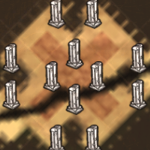

| Chess | |
|  |
|
| Abundant | |
| Occasional | |
| Rare | |
| “ | That's my natural habitat. | ” |
| –Maxwell | ||
Chess Biome (also known as the Maxwell Biome) is a terrain that appears in both Adventure Mode and Sandbox Mode to protect the Wooden Thing and its components. It looks like grey and white marble squares and often has carpet as well. Marble Trees, Marble Pillars, Harp Statues, and Maxwell Statues can all be found in this biome; meanwhile, Flowers are replaced by Evil Flowers, which will quickly drain sanity if the player is near them. Clockwork Knights, Clockwork Bishops, and a Clockwork Rook can be found on a Chess biome as well.
| Biomes | |
| Surface | Chess • Grasslands • Graveyard • Forest • Marsh • Mosaic • Ocean • Rockyland • Savanna • Desert • Deciduous Forest |
| Caves | Mushtree Forest • Rocky Plains • Stalagmite Biomes • Sunken Forest • Cave Swamps |
| Ruins | Abyss • Labyrinth • Military • Sacred • Village • Wilds |
| Related | Bridges • Map • Road (Trail) • Turfs |